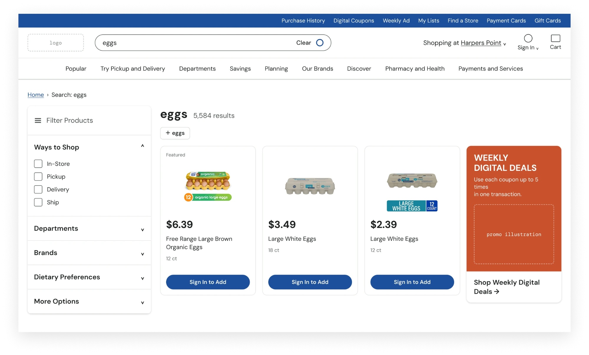
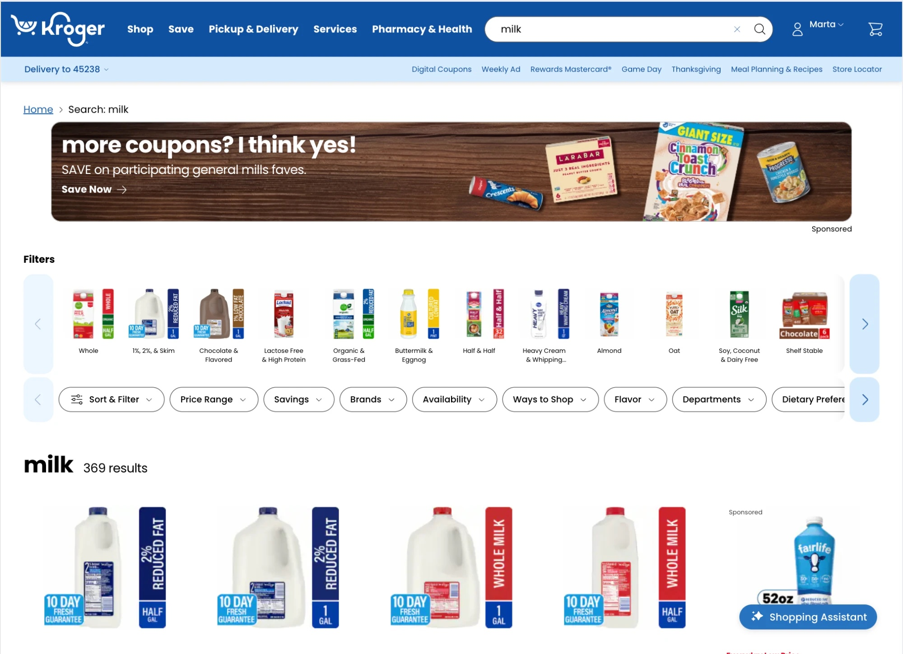
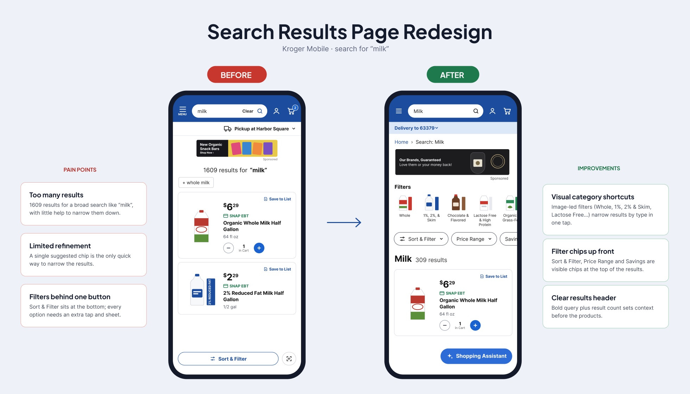

- Company
- Kroger
- Period
- Q1 2021 Dietary filters
- Q3 2022 Visual filters
- Q2 2023 Savings and price filters
- Q1 2025 Horizontal filter bar
- My role
- Co-lead Product Designer — Research, Design, Stakeholder Comms
- Platform
- Web Desktop, Web Mobile & App (iOS & Android)
Overview
Filters were buried in a sidebar, so customers gave up on them.
The problem
Kroger's filters sat in a sidebar panel, behaved inconsistently across web and mobile, and left out price and savings — core needs for grocery shoppers. Broad searches like "chicken" returned 1,000+ results, and customers retyped their query rather than filter.


The outcome
Moderated and unmoderated research turned the overlooked filter panel into a visible, visual tool, and cut broad-query result sets by 80%.
The impact
Filters went from overlooked to a primary way to navigate results.
My role
One of the two main product designers, from research to launch.
- I co-wrote the research plan and ran moderated and unmoderated tests with the research team: a holistic search study and a competitive benchmark against Target and Walmart.
- I turned findings into prioritised recommendations and presented them to senior design and product management at Kroger.
- I shaped the design decisions together with the other main product designer, including directions we dropped after testing.
Key insight
Most participants would rephrase their search before touching a filter. The problem wasn't desire — it was discoverability.
The solution
Four changes, each grounded in research.
- Visual filters at the top of results. Image chips above the product grid. In testing, participants noticed and used them within seconds. Trade-off: a new component, and engineering work to surface category images dynamically.
- Price, savings and dietary filters. Price and savings were the most-wanted filters, so we surfaced them in the visual strip rather than burying them in the panel.
- Fewer, more relevant results. With the back-end engineering team, we capped broad queries and removed products from unrelated categories, so a “milk” search no longer shows soap that contains milk. Broad searches went from 1,000+ results to ~160, lifting add-to-cart.
- New horizontal filter bar for desktop. Filters moved out of the sidebar panel into a bar of chips above the results (Sort & Filter, Price Range, Savings, Brands and more), so they are visible from the start.

What changed
The evidence backed a bolder redesign.
Features customers had ignored became features they used. The studies also showed filters were the highest-leverage area on the results page, which shaped the follow-up work.
Full research and prioritisation
Study 1 — Holistic search study
We expected to learn about queries and relevancy. Instead, most participants said they would refine their query before ever touching a filter — not by preference, but because the filters weren't visible or compelling enough to try. Once they did engage with filters or related tags, they used them repeatedly.
The study also surfaced the two filters customers wanted most but didn't have: price range (the #2 priority overall) and savings/promotions, essential for promotion-aware shoppers.
Study 2 — Refinement benchmark
A focused study of 10–15 Kroger customers comparing Kroger's refinement experience with Target and Walmart, on desktop and mobile. Three clear findings:
- Visual filters were noticed immediately. Tags with images were described as highly relevant. Kroger's related tags had the right idea but weren't visually distinct enough.
- Inconsistent behaviour caused confusion. Every participant was confused about why some filters allowed multi-select and others didn't.
- When filters failed, customers went back to the search box. Participants used two words at most before trying to refine, so oversized result sets were the default.
Prioritising the work
I grouped recommendations into three tiers. The high-impact items became the core of the design brief:
- High: combine visual navigation and tags into one prominent filter component at the top of results
- High: make all filters behave consistently (multi-select, view selected, remove selected)
- High: add price and savings as first-class filters
- Medium: add dietary filters (organic, gluten-free, vegan)
- Medium: reduce result sets for broad queries